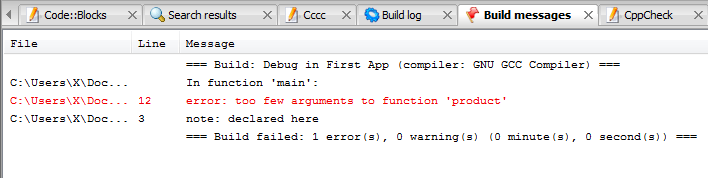
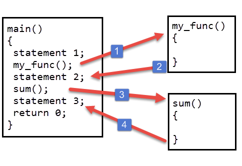

Function basics in C
Last updated on July 27, 2020
A function is a collection of C statements to do something specific. A C program consists of one or more functions. Every program must have a function called main().
Advantages of functions #
- A large problem can be divided into subproblems and then solved by using functions.
- The functions are reusable. Once you have created a function you can call it anywhere in the program without copying and pasting entire logic.
- The program becomes more maintainable because if you want to modify the program sometimes later, you need to update your code only at one place.
Types of function #
- Library function
- User defined function
Library function #
C has many built-in library functions to perform various operations, for example: sqrt() function is used to find the square root of a number. Similarly, scanf() and printf() are also library functions, we have been using them since chapter 1 - Intro to C programming.
To use a library function we must first include corresponding header file using #include preprocessor directive. For scanf() and printf() corresponding header file is stdio.h, for sqrt() and other mathematical related functions, it is math.h.
1 2 3 4 5 6 7 8 9 10 11 12 13 14 15 16 | // Program to find the square root of a number
#include<stdio.h>
#include<math.h>
int main()
{
float a;
printf("Enter number: ");
scanf("%f", &a);
printf("Square root of %.2f is %.2f", a, sqrt(a));
// signal to operating system program ran fine
return 0;
}
|
Expected Output:
1st run:
1 2 | Enter number: 441
Square root of 441.00 is 21.0
|
2nd run:
1 2 | Enter number: 889
Square root of 889.00 is 29.82
|
Common mathematical functions #
| Function | Description | Example |
|---|---|---|
sqrt(x) |
square root of x |
sqrt(900.0) is 30.0 |
exp(x) |
exponential function | exp(1.0) is 2.718282 |
log(x) |
natural logarithm of x (base e)|log(2.718282)is1.0` |
|
log10(x) |
logarithm of x (base 10) |
log10(1.0) is 0.0 |
fabs(x) |
absolute value of x as a floating-point number |
fabs(13.5) is 13.5 |
ceil(x) |
rounds x to the smallest integer not less than x |
ceil(9.2) is 10.0 |
floor(x) |
rounds x to the largest integer not greater than x |
floor(9.2) is 9.0 |
pow(x,y) |
x raised to power y |
pow(2, 7) is 128.0 |
sin(x) |
trigonometric sine of x (x is in radians) |
sin(0.0) is 0.0 |
cos(x) |
trigonometric cosine of x (x in radians) |
cos(0.0) is 1.0 |
tan(x) |
trigonometric tangent of x (x in radians) |
tan(0.0) is 0.0 |
To use these functions you must first include header file math.h.
User defined function #
User created function is known as user-defined functions. To create your own functions you need to know about three things.
- Function definition.
- Function call.
- Function declaration.
Function definition #
A function definition consists of the code that makes the function. A function consists of two parts function header and function body. Here is the general syntax of the function.
1 2 3 4 5 6 7 | return_type function_name(type1 argument1, type2 argument2, ...)
{
local variables;
statement1;
statement2;
return (expression);
}
|
The first line of the function is known as function header. It consists of return_type, function_ name and function arguments.
The return_type denotes the type of the value function returns for e.g int, float etc. The return_type is optional, if omitted then it is assumed to be int by default. A function can either return one value or no value at all, if a function doesn't return any value, then the void is used in place of return_type.
function_name is the name of the function. It can be any valid C identifier. After the name of the function, we have arguments declaration inside parentheses. It consists of type and name of the argument. Arguments are also known as formal arguments. A function can have any number of arguments or even no arguments at all. If the function does not have any arguments then the parentheses are left empty or sometimes void is used to represent a function which accepts no arguments.
The body of the function is the meat of the function, this is where you will write your business logic. The body of the function is a compound statement (or a block), which consists of any valid C statements followed by an optional return statement. The variables declared inside function are called local variables because they are local to the function, means you can’t access the variables declared inside one function from another function. The return statement is used when a function needs to return something to its caller. The return statement is optional. If a function doesn't return any value then it's return_type must be void, similarly if a function returns an int value its return_type must be int.
You can write function definition anywhere in the program, but usually, it is placed after the main() function.
Let's create a small function.
1 2 3 4 | void my_func()
{
printf("Hello i am my_func()");
}
|
The my_func() function doesn’t return any value so it's return_type is void. Also, it doesn’t accept any argument that’s why parentheses are empty.
You can also write void inside parentheses to indicate clearly that this function doesn't accept any arguments.
1 2 3 4 | void my_func(void)
{
printf("Hello i am my_func()");
}
|
Throughout the tutorial, we will use this approach.
The body of my_func() function consists of only one line which prints "Hello i am my_func()" everytime function is called.
Let's create another small function.
1 2 3 4 5 6 | int product(int num1, int num2)
{
int result;
result = num1 * num2;
return result;
}
|
This function accepts two arguments and returns an integer value. The variable result is declared inside a function, so it’s a local variable and only available inside the function. The return statement in line 5 returns the product of num1 and num2 to its caller. Another important point to note is that, just like the variable result, num1 and num2 are local variables, which means we can't access them outside the function product().
Function call #
After the function is defined the next step is to use the function, to use the function you must call it. To call a function you must write its name followed by arguments separated by a comma (,) inside the parentheses ().
For example, here is how we can call the product() function we created above.
product(12, 10);
Here we are passing two arguments 12 and 10 to the function product(). The values 12 and 10 will be assigned to variables num1 and num2 respectively.
If we had called the product() function like this:
product(12);
We would have gotten the syntax error as follows: 
As you can see the compiler is complaining "too few arguments to function product" which simply means that function is called with the lesser number of arguments than required.
If a function accepts no arguments then it must be called using empty parentheses.
my_func();
The following figure describes what happens when you call a function. 
When my_func() function is called from main() the control passes to the my_func(). At this point the activity of the main() function is temporarily suspended; it falls asleep while my_func() function goes to work. When my_func() function finishes its task or when there are no more statements to execute, the control returns back to main() function. The main() wakes up and statement2 is executed. Then in the next line sum() function is called and control passes to the sum(). Again activity of main() function is temporarily suspended, until sum() is being executed. When sum() runs out of statement to execute, control passes back to main(). The function main() wakes up again and statement3 is executed. The important point to note is that main() function is calling my_func() and sum(), so main() is calling function whereas my_func() and sum() are called functions.
If a function returns a value then it can be used inside any expression like an operand. For example:
1 2 | a = product(34, 89) + 100;
printf( "product is = %d", product(a, b) );
|
You are under no obligation to use the return value of a function.
product();
Here the return value from product() is discarded.
If a function doesn't return a value then we can't use it in the expression as follows:
s = myfunc();
One more thing to note is that statement inside a function will execute only when a function is called. If you have defined a function but never called it then the statements inside it will never be executed.
Function declaration #
The calling function needs some information about the called function. When function definition comes before the calling function then function declaration is not needed. For example:
1 2 3 4 5 6 7 8 9 10 11 12 13 14 15 16 17 18 19 | #include<stdio.h>
// function definition
int sum(int x, int y)
{
int s;
s = x + y;
return s;
}
int main()
{
// function call
printf("sum = %d", sum(10, 10));
// signal to operating system everything works fine
return 0;
}
|
Notice that the definition of function sum() comes before the calling function i.e main(), that’s why function declaration is not needed.
Generally function definition comes after main() function. In this case, the function declaration is needed.
Function declaration consists of function header with a semicolon (;) at the end.
Here are function declarations of function my_func() and sum().
1 2 3 | void my_func(void);
int product(int x, int y);
|
Names of arguments in a function declaration is optional so,
int product(int x, int y)
can be written as:
int product(int , int )
Note that return type and argument types must be same as defined while creating the function. So you can't write the following:
float product(int a, int b) – wrong because product() function return type is int.
int product(float a, int b) – wrong because product() function first argument is of int type.
Another important point I want to mention is that the name of the arguments defined in the function declaration needs not to be the same as defined in the function definition.
1 2 3 4 5 6 7 8 | int sum(int abc, int xyx) // Function declaration
int sum(int x, int y) // Function definition
{
int s;
s = x + y;
return s;
}
|
This code is perfectly valid.
A function declaration is generally placed below preprocessor directives.
The following program demonstrates everything we have learned so far in this chapter.
1 2 3 4 5 6 7 8 9 10 11 12 13 14 15 16 17 18 19 20 21 | #include<stdio.h>
// function declaration
int sum(int x, int y);
int main()
{
// function call
printf("sum = %d", sum(10, 10));
// signal to operating system everything works fine
return 0;
}
// function definition
int sum(int x, int y)
{
int s;
s = x + y;
return s;
}
|
Expected Output:
sum = 20
The following program prints the largest number using a function.
1 2 3 4 5 6 7 8 9 10 11 12 13 14 15 16 17 18 19 20 21 22 23 24 25 26 27 28 29 30 31 32 33 34 35 36 | #include<stdio.h>
// function declaration
int max(int x, int y);
int main()
{
// function call
max(100, 12);
max(10, 120);
max(20, 20);
// signal to operating system program ran fine
return 0;
}
// function definition
int max(int x, int y)
{
if(x > y)
{
printf("%d > %d\n", x, y );
}
else if(x < y)
{
printf("%d < %d\n", x, y );
}
else
{
printf("%d == %d\n", x, y );
}
}
|
Expected Output:
1 2 3 | 100 > 12
10 < 120
20 == 20
|
Load Comments